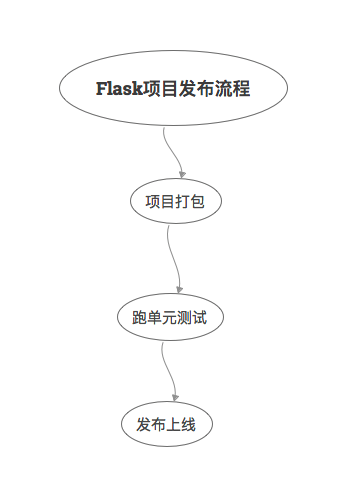

本书作者：测试开发刚哥，文章版权归个人所有，未经授权请勿转载。
本文继续对Flask官方教程进行学习，我就直接跳过Templates、Static Files、Blog Blueprint三小节了，因为基本不会在实际项目中用到这些技术，有时间多学习下前端才是。这篇文章把Make the Project Installable、Test Coverage、Deploy to Production这三小节汇总来学习。我觉得这是官方给出的一个Flask项目发布流程，如下图所示：

这跟我在大型项目中接触到的发布流程大同小异。尤其是对于我们测试来说，跑单元测试这个环节还是有必要好好了解一下的，幸运的是，得益于Python的简单，理解起来会更容易些。所谓一通百通，Flask的单测懂了，其他语言的单测也通了。
项目打包
创建setup.py文件：
from setuptools import find_packages, setup
setup(
name='flaskr',
version='1.0.0',
packages=find_packages(),
include_package_data=True,
zip_safe=False,
install_requires=[
'flask',
],
)
- packages指定Python包，
find_packages()函数会自动查找。 - include_package_data表示包括其他文件比如静态（static）文件和模板（templates）文件。
如果还需要包括其他数据，那么就创建MANIFEST.in文件：
include flaskr/schema.sql
graft flaskr/static
graft flaskr/templates
global-exclude *.pyc
其中global-exclude排除了*.pyc文件。
接着就可以使用pip命令安装了：
$ pip install -e .
安装以后就能用pip list命令查看：
$ pip list
Package Version Location
-------------- --------- ----------------------------------
click 6.7
Flask 1.0
flaskr 1.0.0 /home/user/Projects/flask-tutorial
itsdangerous 0.24
Jinja2 2.10
MarkupSafe 1.0
pip 9.0.3
setuptools 39.0.1
Werkzeug 0.14.1
wheel 0.30.0
这个过程是这样的：pip在当前目录找到setup.py文件，然后根据文件描述把项目文件打包后安装到本地。安装以后就能在任何位置使用flask run来启动应用了，而不仅仅是在flask-turorial目录下。
跑单元测试
单元测试不能保证程序没有Bug，但却是在开发阶段保障代码质量的有效手段。拿我们公司举例来说，开发提测和上线，都会把单元测试作为卡点，单测覆盖率没有达到45%是不能提测和上线的。
Flask项目的单元测试要用到两个工具，一个是我们非常熟悉的pytest，还有一个是coverage，先安装它们：
$ pip install pytest coverage
新建tests/data.sql文件，插入一些测试数据：
INSERT INTO user (username, password)
VALUES
('test', 'pbkdf2:sha256:50000$TCI4GzcX$0de171a4f4dac32e3364c7ddc7c14f3e2fa61f2d17574483f7ffbb431b4acb2f'),
('other', 'pbkdf2:sha256:50000$kJPKsz6N$d2d4784f1b030a9761f5ccaeeaca413f27f2ecb76d6168407af962ddce849f79');
INSERT INTO post (title, body, author_id, created)
VALUES
('test title', 'test' || x'0a' || 'body', 1, '2018-01-01 00:00:00');
pytest的fixture相当于setup，可以做一些测试前的初始化工作，新建tests/conftest.py，编写fixture：
import os
import tempfile
import pytest
from flaskr import create_app
from flaskr.db import get_db, init_db
with open(os.path.join(os.path.dirname(__file__), 'data.sql'), 'rb') as f:
_data_sql = f.read().decode('utf8')
@pytest.fixture
def app():
db_fd, db_path = tempfile.mkstemp()
app = create_app({
'TESTING': True,
'DATABASE': db_path,
})
with app.app_context():
init_db()
get_db().executescript(_data_sql)
yield app
os.close(db_fd)
os.unlink(db_path)
@pytest.fixture
def client(app):
return app.test_client()
@pytest.fixture
def runner(app):
return app.test_cli_runner()
app
创建应用，初始化数据库，使用的是测试配置和测试数据。
-
tempfile.mkstemp()创建了一个临时文件，返回文件描述符和文件路径。并且把临时文件路径传入了DATABASE，接着插入测试数据。测试结束后关闭和移除临时文件。fixture的yield前面的代码相当于setup，yield后面的代码相当于teardown。
-
TESTING: True将Flask置为测试模式，Flask内部会进行一些调整以便于进行测试。
client
调用app.test_client返回一个测试客户端，可以用这个客户端给应用发送请求。
runner
调用app.test_cli_runner()返回一个可以执行应用已注册命令的runner。
测试一下Factory：
# tests/test_factory.py
from flaskr import create_app
def test_config():
assert not create_app().testing
assert create_app({'TESTING': True}).testing
def test_hello(client):
response = client.get('/hello')
assert response.data == b'Hello, World!'
测试一下Database：
# tests/test_db.py
import sqlite3
import pytest
from flaskr.db import get_db
def test_get_close_db(app):
with app.app_context():
db = get_db()
assert db is get_db()
with pytest.raises(sqlite3.ProgrammingError) as e:
db.execute('SELECT 1')
assert 'closed' in str(e.value)
def test_init_db_command(runner, monkeypatch):
class Recorder(object):
called = False
def fake_init_db():
Recorder.called = True
# monkeypatch是pytest内置的一个fixture，也就是猴子补丁。
monkeypatch.setattr('flaskr.db.init_db', fake_init_db)
result = runner.invoke(args=['init-db'])
assert 'Initialized' in result.output
assert Recorder.called
测试一下Authentication：
# tests/conftest.py
class AuthActions(object):
def __init__(self, client):
self._client = client
def login(self, username='test', password='test'):
return self._client.post(
'/auth/login',
data={'username': username, 'password': password}
)
def logout(self):
return self._client.get('/auth/logout')
# 这样就可以使用auth.login()进行用户登录
@pytest.fixture
def auth(client):
return AuthActions(client)
# tests/test_auth.py
import pytest
from flask import g, session
from flaskr.db import get_db
def test_register(client, app):
assert client.get('/auth/register').status_code == 200
response = client.post(
'/auth/register', data={'username': 'a', 'password': 'a'}
)
assert 'http://localhost/auth/login' == response.headers['Location']
with app.app_context():
assert get_db().execute(
"SELECT * FROM user WHERE username = 'a'",
).fetchone() is not None
@pytest.mark.parametrize(('username', 'password', 'message'), (
('', '', b'Username is required.'),
('a', '', b'Password is required.'),
('test', 'test', b'already registered'),
))
def test_register_validate_input(client, username, password, message):
response = client.post(
'/auth/register',
data={'username': username, 'password': password}
)
assert message in response.data
def test_login(client, auth):
assert client.get('/auth/login').status_code == 200
response = auth.login()
assert response.headers['Location'] == 'http://localhost/'
# 使用with后就能在上下文中访问session
with client:
client.get('/')
assert session['user_id'] == 1
assert g.user['username'] == 'test'
@pytest.mark.parametrize(('username', 'password', 'message'), (
('a', 'test', b'Incorrect username.'),
('test', 'a', b'Incorrect password.'),
))
def test_login_validate_input(auth, username, password, message):
response = auth.login(username, password)
assert message in response.data
def test_logout(client, auth):
auth.login()
# 使用with后就能在上下文中访问session
with client:
auth.logout()
assert 'user_id' not in session
更多关于Blog的测试用例就不在此赘述了，感兴趣的同学可以点击文章尾部链接到官网查看。
最后用例写完了，就该运行了。在setup.cfg文件中添加一些配置，可以适当减少单测冗余：
[tool:pytest]
testpaths = tests
[coverage:run]
branch = True
source =
flaskr
然后就可以执行pytest了：
$ pytest
========================= test session starts ==========================
platform linux -- Python 3.6.4, pytest-3.5.0, py-1.5.3, pluggy-0.6.0
rootdir: /home/user/Projects/flask-tutorial, inifile: setup.cfg
collected 23 items
tests/test_auth.py ........ [ 34%]
tests/test_blog.py ............ [ 86%]
tests/test_db.py .. [ 95%]
tests/test_factory.py .. [100%]
====================== 24 passed in 0.64 seconds =======================
pytest -v可以显示每个测试函数。
单测覆盖率才是灵魂，所以建议这样来跑单测：
$ coverage run -m pytest
然后查看报告：
$ coverage report
Name Stmts Miss Branch BrPart Cover
------------------------------------------------------
flaskr/__init__.py 21 0 2 0 100%
flaskr/auth.py 54 0 22 0 100%
flaskr/blog.py 54 0 16 0 100%
flaskr/db.py 24 0 4 0 100%
------------------------------------------------------
TOTAL 153 0 44 0 100%
也可以生成html报告：
$ coverage html
发布上线
先安装wheel库：
$ pip install wheel
然后创建.whl文件：
$ python setup.py bdist_wheel
命令执行后会生成一个dist/flaskr-1.0.0-py3-none-any.whl文件，文件格式是{project name}-{version}-{python tag} -{abi tag}-{platform tag}。
在服务器上就可以安装了：
$ pip install flaskr-1.0.0-py3-none-any.whl
因为是新机器，所以需要初始化数据库：
$ export FLASK_APP=flaskr
$ flask init-db
如果是Python虚拟环境，那么可以在venv/var/flaskr-instance找到Flask实例。
最后设置下SECRET_KEY，Flask官网给出一种生成随机SECRET_KEY的方法：
$ python -c 'import secrets; print(secrets.token_hex())'
'192b9bdd22ab9ed4d12e236c78afcb9a393ec15f71bbf5dc987d54727823bcbf'
生成后新建venv/var/flaskr-instance/config.py文件粘贴即可：
SECRET_KEY = '192b9bdd22ab9ed4d12e236c78afcb9a393ec15f71bbf5dc987d54727823bcbf'
至于生产服务器的选取，建议不要使用flask run，因为这是Werkzeug提供的开发服务器，既不稳定，也不安全。
可以使用WSGI服务器，比如Waitress：
$ pip install waitress
$ waitress-serve --call 'flaskr:create_app'
Serving on http://0.0.0.0:8080
标准的WSGI服务器如下：
-
Gunicorn
-
uWSGI
-
Gevent，我们组就用的这个：
from gevent.pywsgi import WSGIServer from yourapplication import app http_server = WSGIServer(('', 5000), app) http_server.serve_forever() -
Twisted Web
-
Proxy Setups
参考资料：
https://flask.palletsprojects.com/en/2.0.x/tutorial/install/